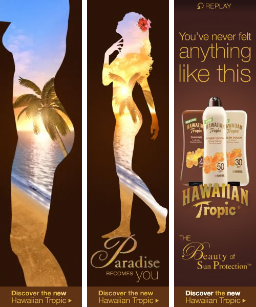

3D Modeling & Printing

GREY trophy 3D print +
Brief: 3D model and print an object to be the trophy for an internal design competition.
Process: Using a series of photos from various angles of an existing art piece for reference, model a series of 3D objects in Autodesk Tinkercad. Export each object seperately to insure proper 3D printing. Convert the file for 3D printing using the Makerbot Replicator 2. Assemble the 3D printetd pieces into the final trophy and house in a clear plexiglass case.
“The making influences the thinking.”
Front-End Development & Responsive Design
Harvey Nichols digital ad +
Brief: A personal project, and a personal challenge, to recreate a print ad as a responsive html page.
Process: Convert an image of a print design into responsive HTML and CSS. Publish online and save the working code on github.
View HTML Ad
Website Design & Front-End Development
pkboo kids +
Brief: Design and code an e-commerce site for a stylish baby accessories company, using the branding previously designed.
Process: Layout in Adobe InDesign with retouching in Photoshop. Convert approved designs into HTML and CSS. Handoff final coded layouts to back-end developer to incorporate Shopify ecommerce functionality.
View HTML Website
Rich Media Banners
Canon “Beyond the Still” +
Brief: Create a series of expanding banner ads with the ability to play two alternating videos in a variety of sizes. Create the layout with stills of the first frame of the video. Work with the photo retouchers to extend the initial still art as necessary and match the print campaign. Work with the trafficing company to code the Flash banner in their custom Actionscript code for delivery.
Process: Layout in Adobe InDesign with retouching in Photoshop. Final layout included type kerning, video formatting, animation and coding in Flash. Files provided as custom-coded SWFs via vendors’ custom application for testing and approval.
Result: A total of 16 banners were produced with 8 videos in 2 sizes a-piece within a tight deadline. The client was happy with the results and the campaign won a Cannes Silver Lion in the Promo and Activation category.
View Flash Banner
Front-End Development

Red Lobster "Go Lobster Fishing" +
Brief: Code the design of an illustrated parallax-scrolling infographic microsite.
Process: Convert approved designs into HTML, CSS, and Javascript, working with the brilliant Russel Weiss who made the parallax scrolling work across all the browsers that would allow it. Uploaded final designs to the Red Lobster server for deployment.
View HTML Website
Parrallax-animated HTML5 website
DIRECTV “Anomaly” +
Brief: Create an online comic book that continues the story of the DIRECTV "Ice Cream" spot. Make the online experience immersive, viewable on mobile devices, and shareable on social networks. Work with a small team to write, plan, design, illustrate, and code. Include auto-play, interactivity, animation, and sound design. Project needs to be completed in a week and a half to submit to online awards shows.
Process: Planned with creatives. Managed teams of Illustrators and Developers. Writen on the go using Evernote. Layout in Adobe InDesign with retouching and original art in Photoshop. HTML and CSS presentation coding done with Panic Coda. Final files uploaded to FTP server. Tested on desktop, iPad, and iPhone devices.
View HTML Website
New York Times Homepage Takeover
Canon "Project Imagina10n" +
BRIEF: After repeated failed attempts to get the text-descructive animation just right, I was approached to finess the animation, working with the Art Director, and finalize the custom ad server code, working directly with the ad publisher and nytimes.com.
PROCESS: Animation created and coded in Adobe Flash coding in the vendor's custom ad server code. Files uploaded to FTP server for delivery to outside vendor for deployment.
View Video (.mov)
Facebook Contest Page

Wonderbread +
BRIEF: Create the layout of the various pages for a Facebook contest page from the copy provided. Work with the art buyer to select images that evoke the Wonder Bread brand consumer as well as the possible winners of the contest. Work with the User Experience team to create the optimal Facebook-specific Information Architecture for the end users.
PROCESS: Layout created in Adobe InDesign, then converted to layered art in Photoshop. Files uploaded to FTP server for delivery to outside vendor for development.
View Layout Images
Mobile Web App
Paperdoll +
BRIEF: Create a simple web game for mobile devices that recreates the fun of dress-up paperdolls.
PROCESS: Layout created in Adobe InDesign. Interactivity coded in Panic Coda using jQuery. Files uploaded to FTP server and tested on iOS and Android devices.
View Mobile Web App
Rich Media and Standard Flash banners

Hawaiian Tropic +
Brief: Create two versions of an animated banner to promote Hawaiian Tropic’s new line of lotion. A Rich Media banner that incorporates video and an version that conveys the effect of the video in the size restraints of a regular Flash banner. Animate the “drawing-on” of the headline text and match the timing to the video.
Process: Layout and animation in Adobe Flash with retouching in Photoshop. Replay button and click-through coding in Flash. Files provided as SWFs with accompanying video.
View Rich Media Banner
View Standard Flash Banner
Expandable Rich Media Banner
Penguin Books “Along for the Ride” +
BRIEF: Create an expandable rich media banner ad to create interest in the latest Sarah Dessen novel. The rich media execution needs to match and expand upon the back list books campaign that was running previously. The concept requires a user initiated "kinetic type" animation with audio and interactive functionality for restarting the animation and muting the sound. Work with the sound designer to combine the animation and the audio and format the animation also for use on video sites like YouTube.
PROCESS: Layout in Adobe Illustrator with raster art prepared in Photoshop. The animation and interactivity was created in Flash, combined with the provided audio track. Final files provided as web-ready Flash rich media.
RESULT: The project was well received by the client and achieved the goal of making the book top the charts in the initial week of its release.
View Flash Banner
Interactive Mixer
earwormsMBT “Rapid Spanish” +
BRIEF: Create an audio video tool for learning languages that can be used on mobile devices (iPod, PSP, mobile phones) as well as online. Combine the audio language lessons of the Earworms Musical Brain Training company with animations, imagery and color to use the different ways in which people learn.
PROCESS: Create art in Adobe Illustrator and Photoshop and animate using the earworms audio in AfterEffects. Create a series of demo animations and provide to the client as both Flash video online and as downloadable MP4 files. Compress files for quality and quick download time.
RESULT: The client used the resulting proof-of-concept in partnership presentations and added the online component to their website and social media initiatives.
View Flash Microsite
Standard Flash Banners
Smucker’s “Orchard’s Finest” +
BRIEF: Design and animate online banner ads for Grey Worldwide's client, Smucker's to match existing print ads.
PROCESS: Created using Adobe Photoshop, Illustrator, and Flash. The final designs were provided as web-ready Flash files via FTP and e-mail.
RESULT: The banner ads achieved the goal of conveying the messages of the print ads while adding a bit of life to the product through animation.
View Flash Banner
Portfolio Site and Blog
Vision @ GREY.com +
BRIEF: Design a complete site for Grey NYC's Interactive Department working with the Flash designers and company tech support. The site must be easily updateable and expandable while being compact enough to show the work in a variety of sizes.
PROCESS: Created using XHTML and CSS, Adobe’s Spry AJAX framework, Photoshop, Illustrator, and Flash. The blog was created using WordPress. The final designs were uploaded to the company server as a combination of HTML, CSS and SWFs via FTP.
RESULT: Vision@GREY NYC’s Interactive Department uses the site as a marketing tool as well as for internal moral. Though not in the brief, the added bonuses of a department blog and banner ad size templates became invaluable. The client has since requested a redesign incorporating a Content Management System as well as adding more departments to the site.
View Redesign Layout PDF
Interactive Learning Game
HamletSafety Project +
BRIEF: Create an animated interactive tool to convey meaning as part of a Masters thesis. This game compares the language of Shakespeare with contemporary music lyrics.
PROCESS: Art created in Adobe Illustrator and Photoshop, imported to Adobe After Effects and Flash for motion design and interactivity coding.
Animated Header Graphic
Sk8 Dudes +
BRIEF: Create an animated header graphic as part of the website design of sk8dudes.com, a company that teaches young children to skateboard. The animation had to be eye-catching and interactive but not distract too much from the page content. It also had to convey what the brand was all about.
PROCESS: Logo and Art created in Adobe Illustrator and Photoshop, imported to Flash for motion design and interactivity coding.
View Flash Header
“Work smarter. Not harder.”